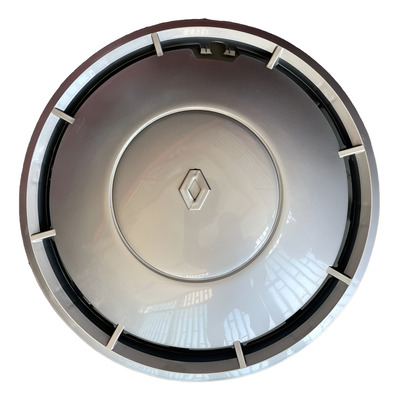
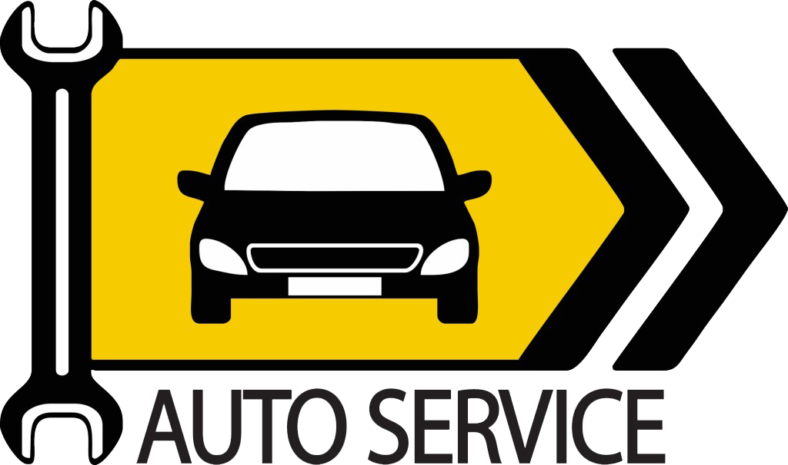
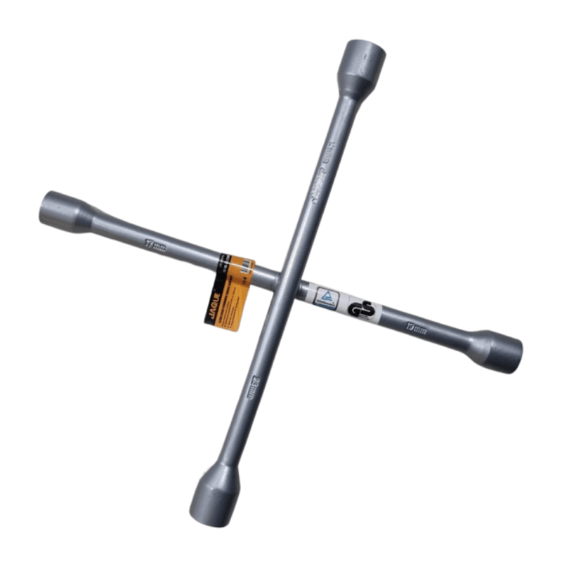
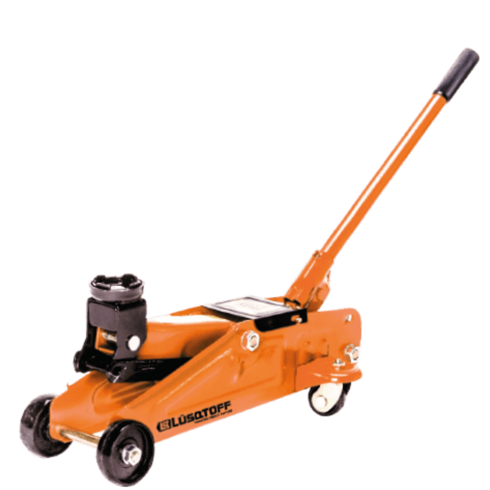
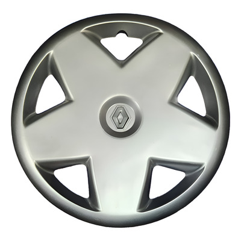
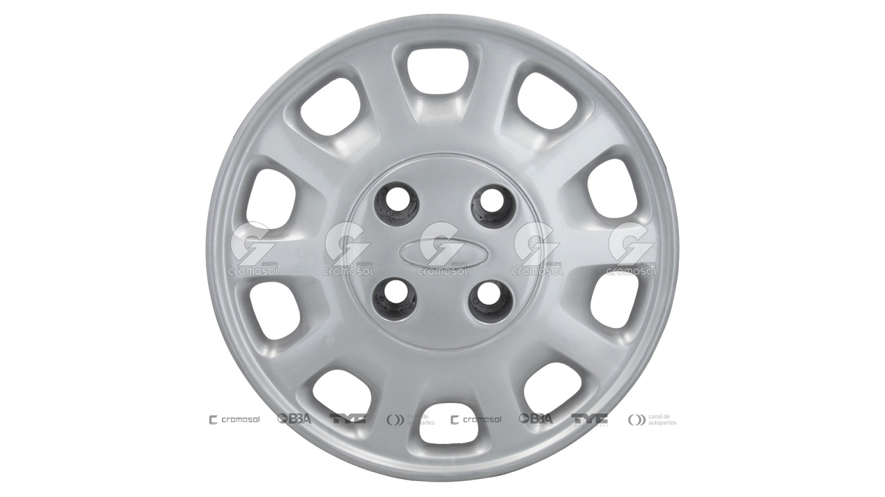
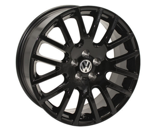

Taza de Ruedas
Sus funciones principales incluyen cubrir la llanta de la rueda y que no se golpee ni se dañe.
$$$$$
Envio gratis


Sus funciones principales incluyen cubrir la llanta de la rueda y que no se golpee ni se dañe.
Envio gratis

La llave cruz sirve principalmente para aflojar y ajustar los pernos o tuercas de las ruedas durante el cambio de un neumático. Sus cuatro extremos suelen tener diferentes medidas (comúnmente 17, 19, 21 y 23 mm) para adaptarse a la mayoría de los vehículos.
Envio gratis

Sirve principalmente para elevar cargas pesadas, comúnmente vehículos, mediante fuerza mecánica o hidráulica para tareas de mantenimiento, reparación o cambio de neumáticos.
Envio gratis

(PARA RENAULT 19 Y 12)
Envio Gratis

(PARA FORD FOCUS Y FIESTA)
Envio Gratis

(PARA VOLKSWAGEN BORA)
Envio Gratis